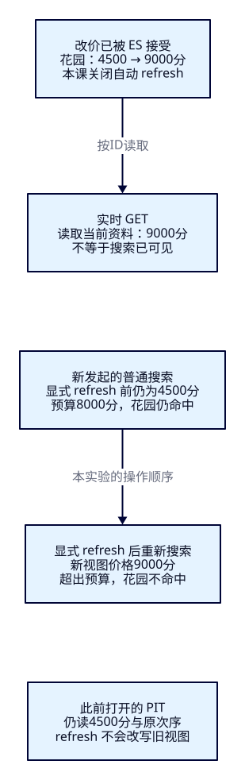
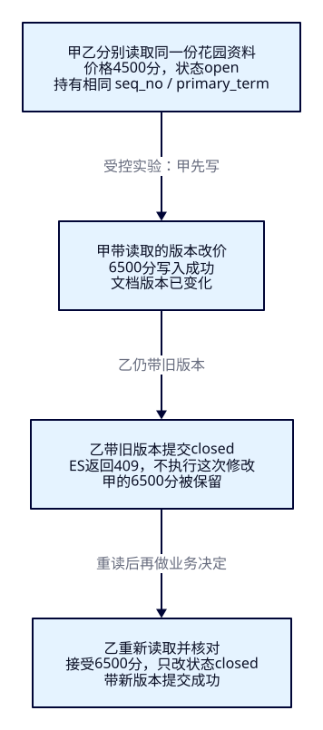

改过了，
为什么还搜到旧资料？
游客已经能筛选、排序并稳定翻页。现在运营把花园从45元改到90元，游客的80元预算里却还留着它；另一位编辑同时下架，又可能覆盖刚改的价格。本课把“写入成功”“按ID读到新值”“搜索采用新值”分开验证，再处理两人修改的冲突。最后换一批新资料，独立证明基础搜索闭环已经学会。
本课目标
- 对固定ID完成创建、读取、完整替换、局部更新和删除，能解释created/updated/noop及下架与删除的区别。
- 在关闭自动refresh的独立索引上，核对实时GET、普通搜索和已有PIT中的价格/状态，明确控制新搜索视图出现的时点。
- 用真实读取的seq_no/primary_term复现409并重读处理；在新样本上独立完成字段、组合查询、排序、Java分页和更新验证。
1. 正确的搜索，也要能接住资料变化
Elasticsearch存的是供检索的文档。固定业务ID让同一个景点的后续变化能找到同一份资料；查询条件决定它有没有资格出现；搜索视图决定这次查询读取哪一版。运营说“已经改价”，只能先说明某次写入被接受，不能直接推出所有游客都看到了新价。
这也是数据库与搜索的职责边界：本课直接修改隔离的ES样本来认识接口，不把ES当成订单、扣库存或跨系统事务。以后数据库变化怎样可靠地投影到ES，留给F36–F42。这里先把单份文档的修改意图和观察证据讲清，否则接入消息链路后也无法判断旧值停在哪里。
2. 用四份新资料，观察一个花园的变化
演示索引tut-f12-attractions，不复用前课索引。_id与keyword字段attraction_id一致；名称、别名和描述用standard文本分析，城市/币种/状态用keyword，金额是整数分，坐标是geo_point。name.raw保留精确值。最小mapping只保留本课字段，不借自动推断制造隐藏前提。
| 业务ID | 名称 / 城市 | 票价分 / 状态 |
|---|---|---|
| d-hz-walk | 湖滨步道 / HZ | 0 / open |
| d-hz-garden | 湖滨花园 / HZ | 4500 / open |
| d-hz-boat | 湖滨游船 / HZ | 8000 / open |
| d-sh-park | 湖滨公园 / SH | 2000 / open |
全部CNY。查询“湖滨”、杭州、open、0至8000分（包含两端），价格升序再按业务ID升序，初始应walk→garden→boat，共3份；上海公园不符合城市。免费0分有资格，8000分恰在预算边界。一主零副本与小样本是实验条件，不是生产拓扑建议。
3. f12-c01：先把自动变化关掉
沿用ES9.4.0/Lucene10.4.0、Boot4.0.8、官方Java与Rest5 Client9.4.8、Wrapper3.3.4/Maven3.9.11。应用用JDK25，作者为Temurin25.0.4.1+1；这与ES bundled JVM是两个运行时。脚本依赖Bash、curl、Python3标准库；不要求你学习验收框架。Pages只承载教程。
cd projects/travel-search
docker compose -f infra/single-node/compose.yaml up -d es
bash infra/single-node/wait.sh
bash labs/f12/01-prepare.sh
bash labs/f12/02-crud.sh准备六请求依次检查版本、建索引确认、green且未超时、Bulk四项created且errors=false、refresh零失败、count4。重复建索引报已存在就停下，先做本课点名清理。CRUD脚本的开头和结尾重导原四份并refresh，以便独立重跑；被删的文档重建会是created，其余可为updated，不能统称全部首次创建。
完整mapping与固定资料
{
"settings": {
"number_of_shards": 1,
"number_of_replicas": 0,
"refresh_interval": "-1"
},
"mappings": {
"dynamic": "strict",
"properties": {
"attraction_id": {
"type": "keyword"
},
"name": {
"type": "text",
"analyzer": "standard",
"fields": {
"raw": {
"type": "keyword"
}
}
},
"aliases": {
"type": "text",
"analyzer": "standard"
},
"description": {
"type": "text",
"analyzer": "standard"
},
"city_code": {
"type": "keyword"
},
"ticket_price_fen": {
"type": "integer",
"coerce": false
},
"currency": {
"type": "keyword"
},
"status": {
"type": "keyword"
},
"location": {
"type": "geo_point"
}
}
}
}四份原资料 · Bulk输入。index.refresh_interval=-1明确关闭自动refresh；它不禁止手动refresh，也不冻结GET。观察旧搜索结果时不要另开会自动refresh的工具。
4. 固定ID不等于每次都在“追加”
CRUD是创建、读取、更新、删除四种动作。PUT /索引/_doc/ID在ID不存在时创建，存在时完整替换_source；不是只合并你写出的字段。脚本先创建d-hz-new“湖滨新展馆”3000分，返回201/created；GET核对完整资料。改成同ID完整资料，通常返回200/updated。若业务意图是“只允许新建”，使用PUT /索引/_create/ID；已存在返回409，避免把已有景点误覆盖。
curl --fail-with-body -sS -X PUT http://127.0.0.1:19200/tut-f12-attractions/_doc/d-hz-new -H 'Content-Type: application/json' --data-binary @search/f12/new-document.json
curl --fail-with-body -sS http://127.0.0.1:19200/tut-f12-attractions/_doc/d-hz-new
curl --fail-with-body -sS -X PUT http://127.0.0.1:19200/tut-f12-attractions/_doc/d-hz-new -H 'Content-Type: application/json' --data-binary @search/f12/replacement.json反例更能说明区别：用同一PUT只提交{"ticket_price_fen":3500}，再GET只剩这个价格字段，名称、城市和状态都没了。strict mapping会拒绝未知字段，却不会替业务验证必填字段齐全。原搜索视图短暂仍能查到完整旧资料；refresh后它因不符合文本/城市/状态条件消失。随后用完整replacement.json恢复，名称改为“湖滨新展馆（二期）”、价格3500分。
只想改花园价格，使用POST /tut-f12-attractions/_update/d-hz-garden，把变化放进doc。局部更新会读取已有_source、合并修改，再重新索引完整文档，不是直接在Lucene里改一个数值格。其余字段保留，新的价格进入后续搜索视图。对不存在的ID，本课未设upsert，返回404；重复提交相同值默认可能返回noop，不能要求每次都得到updated。固定ID避免新增一份同名文档，但不自动解决旧内容覆盖新内容。
{
"doc": {
"ticket_price_fen": 9000
}
}5. 同一个变化，三种读取证据

实时GET默认按ID读取当前文档，不依赖普通搜索是否已经刷新。花园改9000分后，GET显示新价且name仍为“湖滨花园”；在本课受控条件下，普通搜索仍返回4500分，并让它留在8000分预算内。两份输出分别正确地回答“现在的资料是什么”和“当前可搜索视图是什么”，不能只看HTTP都是200就判断一致。
{
"size": 20,
"track_total_hits": true,
"query": {
"bool": {
"must": [
{
"multi_match": {
"query": "湖滨",
"fields": [
"name^3",
"aliases^2",
"description"
],
"type": "best_fields",
"operator": "and",
"tie_breaker": 0.0
}
}
],
"filter": [
{
"term": {
"city_code": "HZ"
}
},
{
"term": {
"currency": "CNY"
}
},
{
"term": {
"status": "open"
}
},
{
"range": {
"ticket_price_fen": {
"gte": 0,
"lte": 8000
}
}
}
]
}
},
"sort": [
{
"ticket_price_fen": "asc"
},
{
"attraction_id": "asc"
}
]
}显式POST /tut-f12-attractions/_refresh后，新搜索读到9000分，花园因超预算不命中。refresh让写入对新搜索可见，不等于flush、备份或跨系统持久化完成。F11已经打开的PIT仍保留原价/原次序，refresh不会改写那个视图；想看新价，要关闭旧轮再开始新搜索。
下架是把boat的status改成closed，资料仍存在，实时GET会读到closed；本课查询的open过滤使它在refresh后退出结果。删除则是DELETE /tut-f12-attractions/_doc/d-hz-new，返回deleted，GET随后404/found=false；refresh前搜索仍可能返回旧资料，之后才消失。第二次无条件删除返回404/not_found，更新已删资料返回404。不能把所有404都当成同一业务错误，也不要用删除来模拟暂停售卖。
| 受控阶段 | 普通搜索完整ID次序 | 判断 |
|---|---|---|
| 原四份资料 | walk → garden → boat | 3份，garden4500分 |
| 新展馆恢复且refresh | walk → new → garden → boat | 4份，new3500分 |
| garden9000分并refresh | walk → new → boat | 3份，超预算排除 |
| boat closed并refresh | walk → new | 2份，下架资料仍能GET |
| 删除new并refresh | walk | 1份，new的GET为404 |
表中省略共同的d-hz-前缀，响应和脚本核对完整ID。结束时脚本恢复原四份；把每个变化前后都截成证据，再进入下一案例。
6. refresh参数是在约定“何时返回”
写入接口默认refresh=false，不额外采取刷新动作；它不是保证之后一直不可搜。refresh=true会在该次操作后刷新涉及的分片；本课用它对照立即可见，不能把每次强刷当成免费操作。独立的_refresh请求在这里点名整个本课索引。两者作用范围需要区分。
refresh=wait_for通常等一次refresh使本次变化可搜再返回，不会仅因为这个参数就立即刷新。自动refresh关闭后，若没有其他触发，它可以一直等；不能把“等待”误解成“自己稍后强刷”。作者用一个等待中的写请求，先GET确认新值已写入且请求未完成，再从另一个请求显式refresh，等待请求才成功返回。监听槽用尽时wait_for可能强制refresh并返回forced_refresh=true；本课未制造槽耗尽。默认间隔不是延迟上限，客户端等超时也不能据此断言写入没发生，须读取核对。官方参数说明与受控等待实测入口可对照。
7. f12-c02：409保护的是修改意图
甲乙都先读到花园4500分/open。甲改6500分；乙只想下架。如果乙把自己先前读到的整份旧资料无条件PUT回去，就会顺带把价格改回4500分。即使当前局部更新的两个字段没有重叠，业务也可能要求“我确认的资料没变才允许修改”。因此这课使用乐观并发控制：读取时拿一个版本条件，写入时请ES核对它仍然有效。
GET响应的_seq_no是文档最近一次修改的序号，_primary_term是该次修改所属主分片任期。它们是ES的并发条件，不是票价、业务版本号、时间戳或跨分片全局序列；不能由应用自己加一。单节点实验中term可以一直不变，也仍需两项一起传。POST _update、PUT _doc和DELETE _doc可携带if_seq_no与if_primary_term；搜索也可显式请求seq_no_primary_term，本课直接用实时GET取得，避免把PIT中的旧令牌误当当前状态。

bash labs/f12/03-conflict.sh脚本的两个GET扮演两位编辑者，分别保存真实令牌。甲的带条件改价成功，乙用旧令牌改closed返回409/version_conflict_engine_exception；GET确认价格6500分且状态仍open。乙重读后核对并接受新价格，再只提交closed，最终GET为6500分/closed。旧令牌删除同样409；新读取令牌删除成功。中间未经refresh的搜索仍显示4500分，说明写冲突检查和搜索可见性是两条独立的判断。
完整动态REST冲突流程：不硬编码版本号
辅助函数es_version直接把GET的两项条件转为URL参数；call打印完整路径、body和响应，定义在完整实验文件。
def conflict():
restore();path=f'/{INDEX}/_doc/d-hz-garden';update=f'/{INDEX}/_update/d-hz-garden'
a=call('GET',path);b=call('GET',path);assert (a['_seq_no'],a['_primary_term'])==(b['_seq_no'],b['_primary_term'])
assert call('POST',update+'?'+es_version(a),{'doc':{'ticket_price_fen':6500}})['result']=='updated'
r=call('POST',update+'?'+es_version(b),{'doc':{'status':'closed'}},expected=409)
assert r['error']['type']=='version_conflict_engine_exception'
fresh=call('GET',path);assert fresh['_source']['ticket_price_fen']==6500 and fresh['_source']['status']=='open'
assert call('POST',update+'?'+es_version(fresh),{'doc':{'status':'closed'}})['result']=='updated'
old=search();assert next(h for h in old['hits']['hits'] if h['_id']=='d-hz-garden')['_source']['ticket_price_fen']==4500
refresh();assert ids(search())==['d-hz-walk','d-hz-boat']
call('DELETE',path+'?'+es_version(a),expected=409)
fresh=call('GET',path);assert fresh['_source']['ticket_price_fen']==6500 and fresh['_source']['status']=='closed'
call('DELETE',path+'?'+es_version(fresh));call('GET',path,expected=404)
restore()不要把409处理成删除版本条件后重试，也不要盲目重放整份旧_source。retry_on_conflict针对update内部的读改写冲突重试，不替你决定“看到别人改价后还要不要下架”；本课显式版本条件与它也不能随意混用。重读、核对字段和业务意图、重新提交，是这里的恢复契约。若写响应在网络中丢失，应先读取判断实际状态，不能把没收到成功当成一定没写入。
8. 已懂REST，再看Java怎样表达同一个约定
同一个Boot应用新增/api/attractions/changes，服务端固定索引，TRAVEL_F12_INDEX仅在启动前指定。GET返回id/seqNo/primaryTerm/document；创建仅允许新ID；替换、局部更新与删除要求读取到的两项版本。原F07–F11接口保留。资料模型校验必填字段、整数分、状态和路径ID一致；本课PATCH仅支持票价/状态且至少一项，null表示未提交，不能借此删除字段。REST的400与应用输入400要按各自契约理解。
public Read get(String id) throws IOException {
var r = client.get(g -> g.index(index).id(id).realtime(true), ChangeDocument.class);
if (!r.found()) throw missing();
if (r.source() == null || !id.equals(r.source().attractionId()))
throw new AttractionSearchService.IncompleteSearchException();
return new Read(id, r.seqNo(), r.primaryTerm(), r.source());
}
private void sameId(String id, ChangeDocument doc) {
if (!id.equals(doc.attractionId()))
throw new ChangeFault(400, "DOCUMENT_ID_MISMATCH", "路径ID必须与attraction_id一致。");
}
public Written create(String id, ChangeDocument doc) throws IOException {
sameId(id, doc);
try {
var r = client.create(c -> c.index(index).id(id).document(doc).refresh(Refresh.False));
return new Written(id, r.result().jsonValue(), r.seqNo(), r.primaryTerm());
} catch (ElasticsearchException error) { throw translate(error); }
}
public Written replace(String id, ChangeController.Replace input) throws IOException {
sameId(id, input.document());
try {
var r = client.index(i -> i.index(index).id(id).document(input.document())
.ifSeqNo(input.seqNo()).ifPrimaryTerm(input.primaryTerm()).refresh(Refresh.False));
return new Written(id, r.result().jsonValue(), r.seqNo(), r.primaryTerm());
} catch (ElasticsearchException error) { throw translate(error); }
}
public Written patch(String id, ChangeController.Patch input) throws IOException {
var doc = new LinkedHashMap<String, Object>();
if (input.ticketPriceFen() != null) doc.put("ticket_price_fen", input.ticketPriceFen());
if (input.status() != null) doc.put("status", input.status());
try {
var r = client.update(u -> u.index(index).id(id).doc(doc)
.ifSeqNo(input.seqNo()).ifPrimaryTerm(input.primaryTerm()).refresh(Refresh.False), ChangeDocument.class);
return new Written(id, r.result().jsonValue(), r.seqNo(), r.primaryTerm());
} catch (ElasticsearchException error) { throw translate(error); }
}create对应_create，index对应完整替换，update的doc对应局部合并；所有写入显式Refresh.False，避免框架悄悄隐藏可见性。删除同样携带版本条件。成功DTO带result和新令牌，却不声称已经搜索可见。只读/写当前文档时不拿PIT代替GET；搜索分页继续复用F11的完整sort、条件检查、关闭和闲置回收，本课独立保存会话。
public Written delete(String id, ChangeController.Version input) throws IOException {
try {
var r = client.delete(d -> d.index(index).id(id).ifSeqNo(input.seqNo())
.ifPrimaryTerm(input.primaryTerm()).refresh(Refresh.False));
return new Written(id, r.result().jsonValue(), r.seqNo(), r.primaryTerm());
} catch (ElasticsearchException error) { throw translate(error); }
}
public Object refresh() throws IOException {
var r = client.indices().refresh(rq -> rq.index(index));
if (r.shards().failed().longValue() != 0) throw new AttractionSearchService.IncompleteSearchException();
return Map.of("refreshed", true, "index", index);
}
public PageResult start(PageInput input) throws IOException { return pages.start(input); }
public PageResult next(PageController.Turn input) throws IOException { return pages.next(input); }
public Object close(String cursor) throws IOException { return pages.close(cursor); }
@Scheduled(fixedDelay = 5000)
public void reap() { pages.reap(); }
@PreDestroy
public void shutdown() { pages.shutdown(); }冲突返回409/WRITE_CONFLICT，资料不存在404/DOCUMENT_MISSING；缺索引仍是502，连接不可用503，不能把后端坏配置解释成景点正常消失。以下分支保留在关键实现中。
private ChangeFault missing() {
return new ChangeFault(404, "DOCUMENT_MISSING", "资料不存在，请重新读取并确认是否已被删除。");
}
private RuntimeException translate(ElasticsearchException error) {
if (error.status() == 409)
return new ChangeFault(409, "WRITE_CONFLICT", "版本已变化或ID已存在；请重新读取、核对他人修改，再决定是否重试。");
if (error.status() == 404 && error.error().type().equals("document_missing_exception")) return missing();
return error; // Missing index and other backend errors remain 502 through ApiErrors.
}启动与完整契约
先让JAVA_HOME/PATH指向JDK25；读者自行启动。完整控制器与输入校验 · 资料字段 · 完整服务 · 构建基线。
./backend/mvnw -f backend/pom.xml clean package
java -jar backend/target/travel-search-0.7.0.jarbash labs/f12/04-java.sh本流程包括新建、重复创建、完整替换、旧版本PATCH/DELETE冲突、重读后更新/删除、刷新前后分页；每页把Java实际DSL在同一PIT内重放REST，对照完整ID/价格/score/sort与total/relation。不能只比较页面文字或成功状态码。
9. 在提供的观察窗中亲眼区分两份资料
打开http://127.0.0.1:18080/f12.html。先搜索，第一页应步道0元、花园45元；读取d-hz-garden，核对document和版本。把票价改9000分并保存：只说明ES已接受。再GET应90元，重新搜索仍可能45元；显式refresh后再重新搜索，花园因超预算退出，已有PIT则继续原次序。不要在旧分页里期待新价格。
把原资料重置后，开两个窗口都先读取花园。甲改6500分保存；乙改closed仍用旧版本保存，页面显示409并禁用再次保存。重读会覆盖草稿，先核对再决定是否重试。条件改变会关闭旧轮，失败搜索清掉旧卡片和请求信息；已接受的写入不会自动刷新。观察区展示实际Java请求，不要求你编写前端、管理后台或门户。浏览器只请求同源Java，ES端点和凭据留在服务端，Pages不连接它们。
10. f12-c03：先独立做，再打开复盘
从这里暂停照抄。新资料是八份“星湾”景点，此前的逐步案例没有使用。自己阅读字段和反例，在独立tut-f12-graduation上设计mapping并导入；不依赖演示索引。提交你的mapping、DSL、Java接口调用、完整结果和解释，再看下方参考实现。允许复用已经理解的Java分页和修改契约，必须能解释选择。
- 设计支持名称/别名/描述检索、城市/状态/币种精确过滤、整数金额与唯一ID排序的字段；写明一主零副本、strict、关闭自动refresh与准备步骤，逐项检查Bulk。
- 需求：关键词“星湾”、杭州、CNY/open、非负票价不超过6000分（含边界）；价格升序、业务ID升序、每页2条。通过Java服务完整分页，与REST比较每页ID、顺序、价格、total及完整sort，关闭会话。
- 开一轮PIT并保留首屏；把g-hz-garden改7000分。证明GET已变化、未refresh的新搜索仍是旧值；refresh后新轮排除超预算资料，原PIT仍读完原集合。
- 把g-hz-museum下架，证明GET仍能读到closed、refresh后新的搜索将其排除。说明其余五份为何不命中，以及下架为什么不改变文档总数。补一组两位编辑者冲突、重读与恢复证据。
验收不是“页面能打开”：mapping与单位正确、反例逐份解释、集合/顺序/价格一致、旧/新视图区分、409不误覆盖、会话关闭、清理后完整重做，都需要证据。能独立解释这些，便达到F12基础结业；跟着参考脚本跑绿只证明该脚本可用，仍需用自己的结果作答。
完成自己的尝试后：参考结果、运行入口与复盘
固定样本下总数3，价格升序为g-hz-free（0）→g-hz-garden（4500）→g-hz-museum（6000），页长2/1。night超预算、closed下架、sh-park城市错、other不含关键词、usd币种错。garden7000分并refresh后只剩free/museum；museum下架并refresh后只剩free，索引count仍8。原PIT保留原三份及原价，不能与新轮混拼。
参考mapping沿用本课字段，参考Bulk、参考Java输入与lab.py的graduation函数完整给出。结业使用另一个Java进程/18081，固定读写结业索引；不会把浏览器传来的任意索引名交给ES。
APP_PORT=18081 TRAVEL_F12_INDEX=tut-f12-graduation java -jar backend/target/travel-search-0.7.0.jarbash labs/f12/05-graduation.sh参考脚本包含结业索引六步准备；若你已自行创建，先关闭该索引的分页，在本机确认后只删除tut-f12-graduation再运行，不能直接覆盖自己的作答。打开18081/f12.html时把关键词改“星湾”、预算60元、ID改g-hz-garden；页面默认仍是演示条件，避免把默认值误当结业答案。实际两轮执行记录见ES/Java验收，HTTP阅读与观察窗见本轮记录。参考解与作者自审不能替你获得独立结业。
11. 关闭、清理，再完整重做
bash labs/f12/cleanup.sh
bash labs/f12/01-prepare.sh
bash labs/f12/02-crud.sh
bash labs/f12/03-conflict.sh
bash labs/f12/04-java.sh
bash labs/f12/05-graduation.sh只删除tut-f12-attractions和tut-f12-graduation；404是已不存在，其他错误必须停下。不要清空集群、删卷或改前课数据。重建两索引时Bulk应分别四项/八项created；中途恢复时允许created/updated混合，要按是否曾删除解释。所有_seq_no、primary_term和PIT/sort来自本轮响应，不抄旧收据。
全部结束后关闭自己启动的两个Java进程。若框架ES原来停止，用相同compose的stop es恢复；保留持久卷与源码篇节点。未刷新变化在外部refresh后会改变，独立实验期间不要让另一个工具替你做refresh。
固定版本依据与验证范围
官方并发控制与refresh参数说明用于定位语义；具体以ES9.4.0两轮实测及固定tag哈希收据为准。UpdateHelper.prepareUpdateIndexRequest展示读取/合并/noop/重新索引，RestUpdateAction.prepareRequest解析版本与refresh参数，InternalEngine.realtimeGetUnderLock区分实时读取路径与内部读者。未把GET简化成“永远只读translog”。
本课是受控交错写入、单节点单分片；未做随机并发压测、主分片切换、多节点故障、性能、监听槽耗尽、跨系统事务或CDC。执行超时/分片部分失败仅沿用防护，未制造。当前入口无法设置或核验xhigh，作者自审，无独立代理；不将提示词视为已修改运行配置。
能力检查：用证据作答
1. PUT只给ticket_price_fen，为什么景点后来搜不到了？
_doc是完整替换，未提交的名称/城市/状态被移除。strict不保证必填字段。旧搜索视图可能暂时仍命中；refresh后新视图不符合查询。只改价格应使用_update的doc，并保留业务校验。
2. GET显示9000分，80元预算里却显示45元，是谁错了？
本课关闭自动refresh，GET读当前资料，搜索读旧视图。显式refresh后新搜索才排除花园；已有PIT保留原资料。先确定读取路径和时点，再判断是否符合约定。
3. refresh=wait_for是否会在自动refresh关闭时自行及时返回？
不保证。它通常等待使该次写入可见的refresh；本实验从另一请求显式refresh才释放。监听槽耗尽可强制刷新，但这里未测，不能靠它兜底。
4. 乙遇409，把if_seq_no删掉再发为什么危险？
删除条件就丢掉“仅在读到的版本未变时修改”的约束，可能覆盖他人的更新。应重读、比较、确认意图，再用新令牌提交；只提交意图中的字段。
5. closed和DELETE都让游客搜不到，怎样证明不是同一种状态？
下架后GET仍返回closed资料，索引count不减；删除后GET404/found=false，refresh后搜索也不再命中。两者搜索结果相同依赖本课open过滤，其他查询可能看见closed。
6. 怎样证明基础结业，而不是又照抄了一次？
保留先于参考解的mapping/预测/DSL与自己的完整输出，逐份解释新样本的反例，核对REST/Java分页集合与次序，演示GET/search/PIT的变化和旧版本409，关闭并清理重做。仅报告200或脚本通过不够。
四个会把旧资料留给游客的陷阱
速记与下一课
| 意图 | 本课约定与证据 |
|---|---|
| 创建/完整替换 | 固定ID的_doc；只准新建用_create，冲突409 |
| 局部修改 | _update + doc，保留其他字段；相同值可noop |
| 下架/删除 | closed仍存在；DELETE后GET404，搜索另看refresh |
| 实时读取/搜索 | GET读当前资料；搜索读可搜索视图；已有PIT继续旧轮 |
| 可见性 | false不主动刷，true刷新涉及分片，wait_for通常等刷新 |
| 并发保护 | 读取两项令牌，条件写；409重读并核对意图 |
| 基础结业 | 新样本的字段、查询、Java、排序分页、更新和恢复证据 |
先核对修改了哪份资料，再核对这次读取采用哪一版。你已经能完成基本景点搜索闭环，并区分写入、搜索视图与冲突。下一阶段开始改善“搜不到和搜错了”：名字明明含有目的地却没命中，究竟被切成了什么词？F13从_analyze观察分析链，本课不提前安装插件或调整评分。